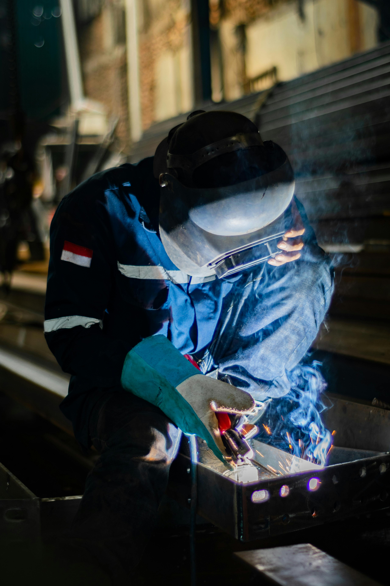
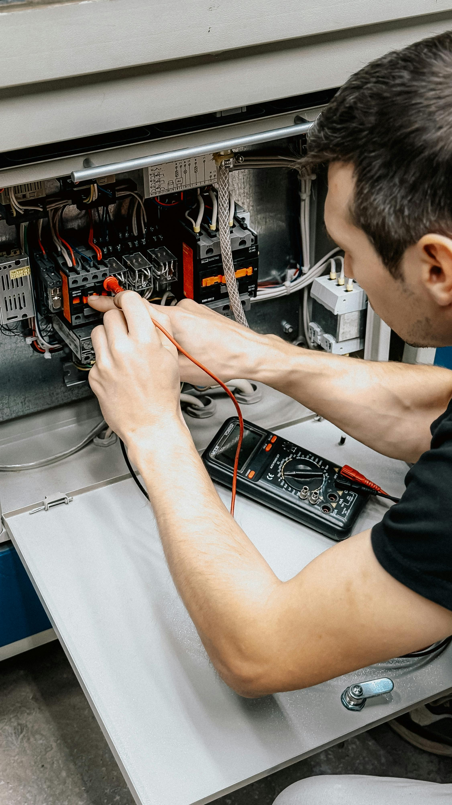

PROGRAM KEAHLIAN
Jurusan Kami
Mempersiapkan siswa menjadi tenaga kerja profesional dan kompeten di dunia industri.

Teknik Jaringan Komputer dan Telekomunikasi

Manajemen Logistik

Teknik Kendaraan Ringan

Teknik Pemesinan

Teknik Elektronika Industri